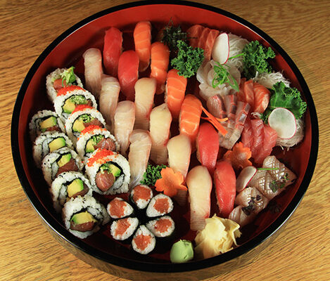

Sushi Platter

Description
A sushi platter is a visually stunning and delicious assortment of
Japanese delicacies.
It typically features an array of fresh fish and seafood, such as tuna,
salmon, and shrimp, arranged artfully on a platter.
Each piece of sushi is a harmonious blend of flavors and textures, from
the tender fish to the slightly sticky, vinegared rice.
The platter often includes a variety of sushi types, such as nigiri,
sashimi, and maki rolls.
Nigiri consists of a slice of fish atop a small mound of rice, often
garnished with a dab of wasabi.
Sashimi showcases the pure, unadorned flavor of fresh fish, thinly sliced
and served without rice.
Maki rolls are created by rolling fish and vegetables in seaweed and rice,
then slicing into bite-sized pieces.
The sushi platter is typically garnished with pickled ginger, wasabi, and
soy sauce, adding extra layers of flavor and color.
Ingredients
- 1 pound sushi-grade tuna
- 1 pound sushi-grade salmon
- 1/2 pound sushi-grade yellowtail
- 1 avocado, sliced
- 1 cucumber, julienned
- 2 cups sushi rice
- 1/4 cup rice vinegar
- 2 tablespoons sugar
- 1 tablespoon salt
- 10 sheets nori (seaweed)
- 1/4 cup soy sauce
- 2 tablespoons wasabi
- 1/4 cup pickled ginger
- 1 tablespoon sesame seeds
- 1/4 cup tobiko (fish roe)
- 1/4 cup tamago (eggplants)
- 1/4 cup wasabi sauce
Steps
- Rinse the sushi rice under cold water until the water runs clear.
- Cook the sushi rice according to the package instructions.
- In a small bowl, mix the rice vinegar, sugar, and salt until dissolved.
- Once the rice is cooked, transfer it to a large bowl and gently fold in the vinegar mixture. Allow the rice to cool to room temperature.
- Prepare the fish and vegetables by slicing them into thin, even strips or pieces.
- Place a sheet of nori on a bamboo sushi mat, shiny side down.
- Wet your hands with water to prevent sticking, then spread a thin layer of sushi rice over the nori, leaving a 1-inch border at the top edge.
- Arrange slices of fish, avocado, and cucumber in a horizontal line across the rice.
- Using the bamboo mat, carefully roll the sushi away from you, pressing gently to keep the roll tight.
- Once rolled, use a sharp knife to slice the roll into bite-sized pieces.
- Arrange the sushi pieces on a platter, along with nigiri and sashimi if desired.
- Garnish the platter with pickled ginger, wasabi, and soy sauce.
- Sprinkle sesame seeds and tobiko over the sushi for added flavor and presentation.
- Serve the sushi platter immediately and enjoy.